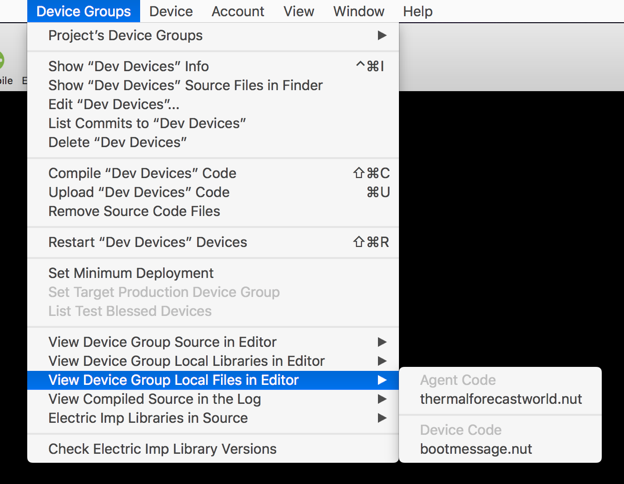
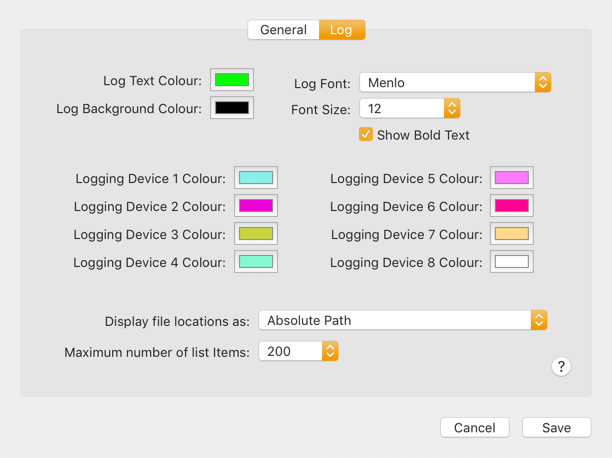

Squinter 2.0 Beta‘A Squirrel Integrator’
|
| File | Squinter_2_0_121.zip |
| File Size | 8.9MB |
| SHA | 1111aaa2222bbbb3333cccc4444dddd55555eeee66666ffff7777gggg |
| SHA 256 | 1111aaa2222bbbb3333cccc4444dddd55555eeee66666ffff7777gggg |
About Squinter
Squinter is a utility to help you work on Electric Imp software development projects using your own editor and code files you keep in a local folder — which may also be sync’d with a cloud service like Dropbox or a version control system like GitHub.

With Squinter and the impCentral API you can:
- Work on your Electric Imp project code in your favourite text editor
- ‘Compile’ in local library files before uploading the complete code to the Electric Imp impCloud™
- You can take charge of your devices:
- Assign them to application firmware (via device groups)
- Update their code
- Reboot devices to run newly uploaded code
- View device logs
- And much more...
Important
Squinter 2.0 is being made available in a pre-release ‘Beta’ version which is not feeature-complete and may
contain code errors that may impact your own code. You should not use Squinter with commercially sensitive
code.
Working With Projects and Products
Squinter works with Projects, each of which is stored as a project file on disk. Projects record which agent
and device code files comprise a given model, and which external libraries and files, and Electric Imp libraries
they use. Project files are identified by the .squirrelproj file extension. Squinter lets you
create new projects, either from scratch or from existing Products in the Electric Imp impCloud.

Projects are listed in the ‘Open Projects’ submenu in the ‘Projects’ menu, which also presents actions you can perform with the currently selected project. You can also select a project from the ‘Current Project’ popup in Squinter’s main window.
New projects are saved initially to Squinter’s working directory, which you can set in the Preferences. To create a new Project, click on appropriate toolbar button or select the relevant option from the ‘Files’ menu. This menu also lists recently opened projects — as does Squinter’s dock icon. You can also save your current Project to a new file if you wish.

The ‘Projects’ menu also presents a list of Products associated with your Electric Imp account in the impCloud. Each Project maintains a one-to-one mapping with a uniquely named Product. New Projects are uploaded to the impCloud as Products, and existing Products can be downloaded as Projects, complete with any Device Groups they contain.

Squinter also allows you to perform tasks on a selected Product, including linking it to an existing project,
or deleting it from the impCloud. Only Products that contain Device Groups with no assigned devices (or no Device
Groups at all) can be deleted.
Working With Device Groups
Squinter lists all of the Device Groups that belong to a given Project. When you select a Project, its Device Groups, if any, are listed in the ‘Project’s Device Groups’ submenu in the ‘Device Groups’ menu. Initially the first Device Group, listed alphabetically, is selected when you select a Project. Only the Device Groups that belong to the currently selected Project are listed, so to view a Device Group from another Project, just select or open that project.

If any devices have been assigned to a Device Group, they are listed as submenus off each Device Group listed in the ‘Project’s Device Groups’ submenu. Selecting a device causes its parent Device Group to be selected too.
When you select a Project or one of its Device Groups, the ‘Device Groups’ menu provides a number on the selected Device Group. This includes editing its name and/or description, getting information about the code deployed to it, and event deleting the Device Group from your Project and the impCloud. However, you can’t delete a Device Group that has devices assigned to it. You can restart simultaneously all of the devices assigned to the selected Device Group here too.
Because the code you work on will be uploaded to a given Device Group rather than to a Project (as was the case with Squinter 1.0), you will find the commands that allow you to access a Device Group’s source code files (and any libraries or other Squirrel files they contain) from submenus included in the ‘Device Groups’ menu.

You can add a new Device Group to a Project either by selecting the option from the ‘Project’s Device Groups’
submenu, or by choosing ‘Add source files to Project’ from the ‘Files’ menu. This can be used to add agent and/or
device code files to an existing Device Group, or to add them to a new Device Group created specially.
Working With Devices
Squinter keeps track of your development devices. It lists these in the ‘Device Groups’ menu’s ‘Project’s Device Groups’ submenu, alongside the Device Group each device is assigned to. Unassigned devices are listed in their own section. Specific devices can also be selected from the ‘Current Device’ popup menu in Squinter’s main window.

In each of these lists, devices’ status — online or offline, or logging — is listed by their names.
The ‘Device’ menu presents actions you can perform on the currently selected device, including getting information about it, renaming it, removing it from your account and removing its association with a Device Group (unassign it).
You can also force the device to restart. If you want to force all the devices assigned to a given Device Group to restart, not just the selected one, there’s an option for that in the ‘Device Groups’ menu.
To update the information Squinter holds about all of of your development devices, select the ‘Update Devices’ Status’ command in the ‘Devices’ menu. This can be selected at any time, and there is an option in Squinter’s Preferences to have this information retrieved automatically whenever the app starts up.

The ‘Devices’ menu also maintains a submenu of unassigned devices — those which have not yet been assigned to a
Device Group or have been removed from one. Selecting a device from this list will affect the ‘Devices’ menu but not the
currently selected Device Group.
Incorporating Libraries Into Your Code
Squinter lets you incorporate multiple files into the source code that is deployed to a given Device Group. Electric Imp applications comprise two files: one for device code, the other for cloud-based agent code, but Squinter lets you embed into them links to other files, such as local libraries.
For example, you might want to use the same library in multiple Device Groups — they all use the same sensor, say — even between Device Groups that belong to different Projects. Sharing a single library file allows you to update that file without having to edit every listing of device or agent code that uses it. You just recompile each Device Group’s source code to incorporate the changes you’ve made.

Squinter expects your primary source code files — a Device Group’s base device and agent code — to be
named in the standard Electric Imp schema: *.agent.nut and *.device.nut for, respectively,
your agent and device code. The two identifiers (represented here by the wildcard *) need not be identical.
Local library files should be entered into your agent and device source code using the following syntax:
#import "library_filepath\library_filename"
#include "library_filepath\library_filename"This is to distinguish these libraries from Electric Imp online libraries, which use the #require directive.
The name of the library file is arbitrary, but *.class.nut and *.library.nut are the
recommended forms. You may include a full Unix filepath; if you only provide a filename, Squinter expects the file to
reside in the same directory as the *.squirrelproj project file (see ‘Working with Projects and
Products’). You can specify files that need to be reached by moving up through
your folder hierarchy by including .. to mean ‘go up one level’. For example:
#import "..../../generic/bootmessage.nut"This means go up three folders then back down to the folder generic and thus to the file bootmessage.nut.

Internally, Squinter stores all file locations as paths relative to the project file, though you can choose how file
paths are listed by changing the app’s Preferences. When Squinter compiles code, it re-checks the links it has against
those included in the #include statement, updating its internal record as required. Squinter will warn you
if you move a file while is running.
Squinter lets you store both library files and blocks of Squirrel or other data in *.nut and
*.txt files. At compilation, all of these sources are inserted into a master copy of the source code, and
it is this ‘compiled’ Squirrel which will be uploaded to the selected Device Group.
Debugging Code
You can retrieve the most recent log entries for the selected device in one go (up to a maximum of 200), or you can stream logs from the device: entries will appear in Squinter’s main window in real time. You can currently only stream from up to five devices at a time.

When you upload code — using the ‘Upload’ button or the ‘Device Groups’ menu option — the Electric Imp impCloud will perform a syntax check. Any errors it spots will be reported in Squinter’s log window. Line numbers refer to the compiled code, so you can use two actions in the ‘View’ menu to list the current compiled code to help you track down the errors. These two options — one for device code, the other for agent code — will list the compiled source for the currently selected Device Group.
If the log window becomes too crowded, you can clear it using the ‘Clear’ button in the toolbar, which is also home to a
number of shortcuts to various functions provided by Squinter’s menus. You can also print the current contents of the log
window if you have a printer.
Configuring Squinter
To take full advantage of Squinter’s features, you will need an Electric Imp account. With Squinter 2.0 you no longer require a Build API key. Instead you must sign into your account before Squinter can access the Electric Imp impCloud on your behalf. When you first run Squinter 2.0, it will ask you for these credentials and give you the option to store them securely in your keychain to automate login in future. The ‘Account’ menu provides a means to log into your account later if you choose not to do so at the start, or to subsequently sign out.

Squinter’s Preferences panel includes a setting to log in when Squinter starts up. Other options include compiling the code linked to all of a Project’s Device Groups when a Project is opened, and automatically retrieving the latest device and Product information at log-in.
In addition, Preferences contains settings for the colour of Squinter’s log pane, which mono-spaced font is used, and how file paths should be displayed.

Squinter would not be possible without open source software contributions from a number of developers. They are listed in the ‘Acknowledgements’ section of the ‘Help’ menu, along with links to the source code Squinter uses.
Copyright © Tony Smith, 2014-2017